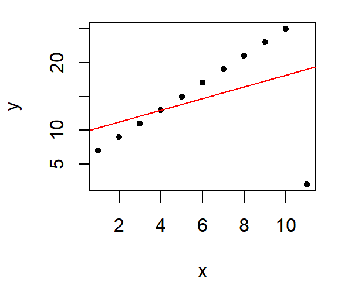
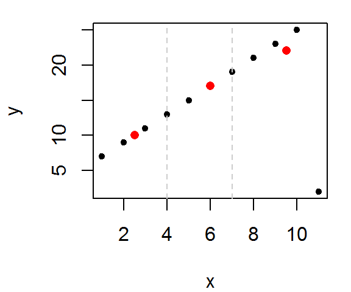
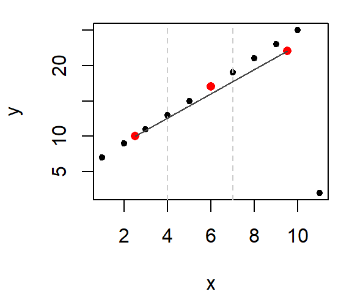
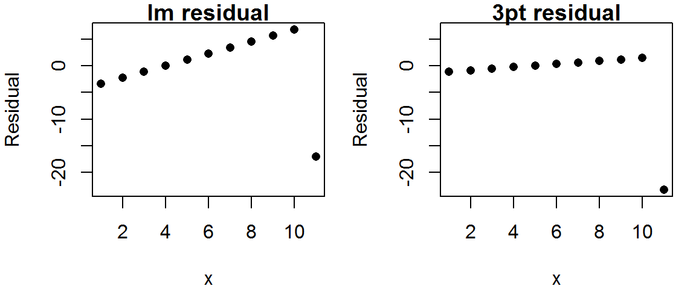
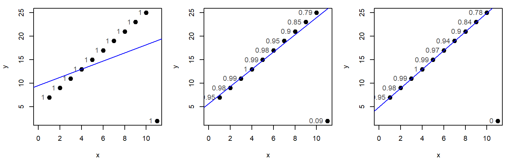
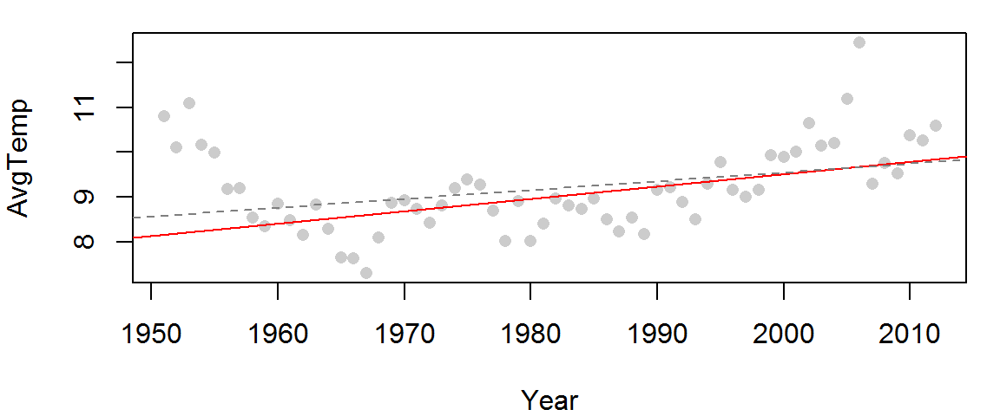
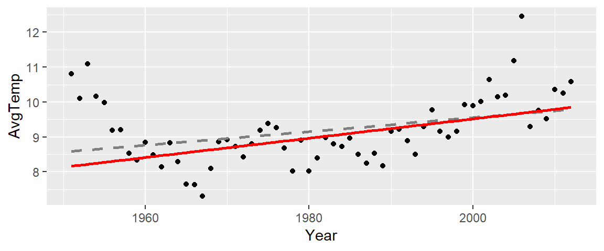
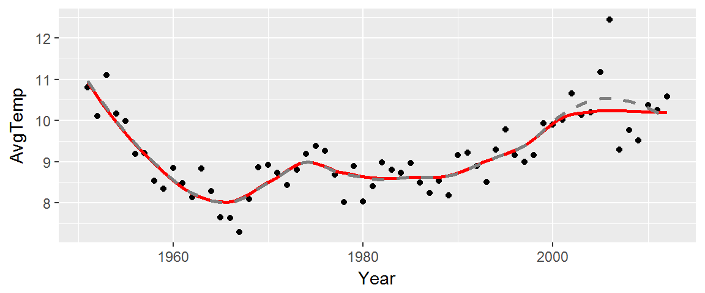
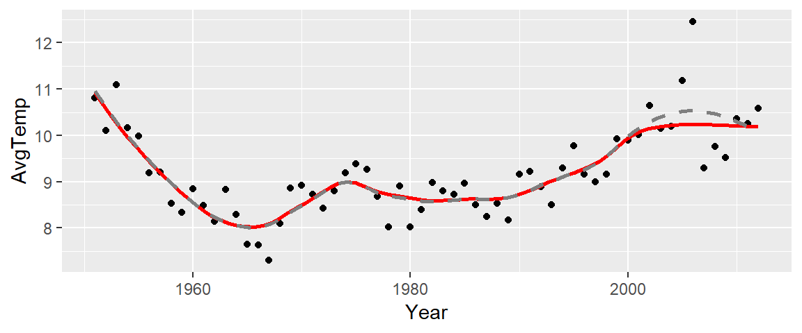

Resistant lines
| dplyr | ggplot2 | lubridate |
|---|---|---|
| 0.8.4 | 3.3.0 | 1.7.4 |
This material is intended to supplement pages 110 to 119 of Cleveland’s book.
Introduction
Ordinary least squares regression lines (those created with the lm() function) suffer from sensitivity to outliers. Because lm’s best fit line makes use of the mean (which is not a robust measure of location), its breakdown point is \(1/n\) meaning that all it takes is for one data point to behave differently from the rest of the points to significantly alter the slope and intercept of the best fit line. For example, let’s start with a well behaved dataset where all points are perfectly aligned and fit this batch with a regression line:

As expected, we have a perfect fit. And the regression model’s coefficients match those used to create the data.
(Intercept) x
5 2 Now, what if one of the points is re-positioned in the plot, what happens to the regression line?

Note the significant change in the line’s characteristics, its intercept and slope are now:
(Intercept) x
9.5454545 0.8636364 The slope dropped from 2 to 0.86 because of a single point!
If our goal is to explore what the bulk of the data has to say about the phenomena being investigated, we certainly don’t want a small batch of “maverick” values to hijack the analysis. We therefore need a set of fitting tools that minimize the influence of outliers. There are many options out there; most notable are Tukey’s 3-point summary line and the bisquare robust estimation method outlined in Cleveland’s text.
Robust lines
Tukey’s 3-point summary
The idea is simple in concept and easy to implement with a pen and paper if the dataset is not too big. It involves dividing the dataset into three approximately equal groups of values and summarizing these groups by computing their respective medians. Two half-slopes are then used to join the three points. Note that points that share the same x value are lumped into the same batch which can lead to unequal group sizes. The motivation behind this plot is to use the three-point summary to provide a robust assessment of the type of relationship between both variables. Such plots are often used to help guide re-expression of the variables x or y or both for the sole purpose of straightening the x-y relationship.
Let’s look at an example using the last (modified) dataset. First, we’ll divide the plot into three approximately equal batches.

Next, compute the median x and y values within each section.
Note that we do not include the same point in any two median calculations. This implies that for the mid-third of the data, we do not include the point straddling the left boundary line when computing its median value. Likewise with the right-third of the data.
The x median values are 2.5, 6, 9.5 and the y median values are 10, 17, 22.
Finally, we fit the tail end medians with a straight line.

This gives us the slope of the line (we can, of course, extend the lines to the boundaries of the x range of values). Note that we have not completely eliminated the influence of the outlier. The outlier does take part in helping fit the line, but it doesn’t wield the same disproportionate influence on the line as did the regression line.
So what purpose does the middle median serve? It helps us adjust the vertical location of the line. The goal is to nudge the line upward or downward about 1/3 of the way towards the middle median value (parallel to the y-axis). This then defines the line’s intercept (which is where the line crosses the y-axis when x = 0).

But you need not stop here. The next logical step is to look at the residuals. The following two plots compare the residuals from the regression model and the 3-point summary plot.
Recall that we are seeking to minimize any non-random pattern in the residual. Even though a monotonic increase in residuals is discernible in both plots, the 3-point summary residual has less of a slope and (ignoring the outlier) has a smaller spread.
The 3-point summary fitting process can be extended by adding the residual slope to the original slope. This process is iterated as many times as needed until the residual slope is close to zero.
Bisquare
In his book (pages 112 - 119), Cleveland uses the bisquare estimation method to come up with a robust line. The first step is to run a linear regression model on the data then to extract the residuals. Next, a weighting scheme is fit to the residuals such that the points associated with outlier residuals are assigned the smallest weight and the points associated with the central residual values are assigned the largest weight. The regression analysis is then re-run using those same weights thus minimizing the influence of the rogue points. This process is repeated several times until the residuals no longer show outliers. The following figure shows three iterations of the bisquare function whereby the weights (shown as grey text next to each point) start off as 1 then are modified following the residuals derived from the most recent regression model.

# Create the bisquare function
wt.bisquare <- function(u, c=6) {
ifelse( abs(u/c) < 1, (1-(u/c)^2)^2, 0)
}
# Assign an equal weight to all points
wt <- rep(1,length(x))
# Compute the regression, then assign weights based on residual values
for(i in 1:10){
dat.lm <- lm(y ~ x ,weights=wt)
wt <- wt.bisquare( dat.lm$res/ median(abs(dat.lm$res)), c=6 )
}
# Plot the data and the resulting line
plot(x,y, pch=20)
abline(dat.lm, col=rgb(1,0,0,0.3))
In the above example, the bisquare method does a great job in eliminating the outlier’s influence.
Sample data
In this example, we fit both an un-modified regression line (dashed grey line) and a bisquare modified regression line (red line) to yearly mean temperature values for the Gulf of Maine.
library(lubridate)
library(dplyr)
df <- read.csv("http://mgimond.github.io/ES218/Data/GoM_hist.csv")
# Subset the data then compute the yearly mean temperature
df2 <- df %>%
mutate(Date = mdy(Date),
Year = year(Date)) %>%
filter(Year > 1950) %>%
group_by( Year) %>%
summarize( AvgTemp = mean(Temp, na.rm=T))
# Generate the base regression model
M1 <- lm( AvgTemp ~ Year, dat=df2)
# Run the bisquare regression model
# We'll use the wt.bisquare() function from the last chunk of code
wt <- rep(1,length(df2$Year))
for(i in 1:10){
M2 <- lm(AvgTemp ~ Year,df2 ,weights=wt)
wt <- wt.bisquare( M2$res/ median(abs(M2$res)), c=6 )
}
# Plot the points
plot(AvgTemp ~ Year,df2, pch=16, col=rgb(0,0,0,0.2))
# Add the robust line
abline( M2, col="red")
# Add the default regression line
abline( M1 , col="grey50", lty=2)
Note the difference in slopes: The robust regression method computes a slope of 0.0298 while the original regression model computes a slope of 0.0197.
Built-in implementation of the bisquare
The MASS package has a robust linear modeling function called rlm that will implement a variation of the aforementioned bisquare estimation technique. Its results may differ slightly from those presented here, but the difference will be insignificant for the most part.
Note that if you make use of dplyr in a work flow, loading MASS after dplyr will mask dplyr’s select function. This can be problematic. So you either want to load MASS before dplyr, or you can call the function via MASS::rlm. An example of its use follows.
M2.r <- MASS::rlm( AvgTemp ~ Year, dat=df2, psi="psi.bisquare")
plot(AvgTemp ~ Year,df2, pch=16, col=rgb(0,0,0,0.2))
# Add the robust line
abline( M2.r, col="red")
# Add the default regression line
abline( M1 , col="grey50", lty=2)
The function rlm can also be called directly from within ggplot.
library(ggplot2)
ggplot(df2, aes(x=Year, y=AvgTemp)) + geom_point() +
geom_smooth(method="lm", se=FALSE, col="grey50", lty=2) +
geom_smooth(method=MASS::rlm, se=FALSE, col="red",
method.args=list(psi="psi.bisquare"))
Robust loess
The bisquare estimation method can also be extended to the loess smoothing function. The following chunk of code fits both an uncorrected robust loess (dashed curve) and a bisquare loess (red curve) to the Gulf of Maine temperature data.
# Fit a regular loess model
lo <- loess(AvgTemp ~ Year,df2, span=1/3)
# Fit a robust loess model
wt <- rep(1,length(df2$Year))
for(i in 1:10){
lo2 <- loess(AvgTemp ~ Year,df2, weights = wt, span=1/3)
wt <- wt.bisquare( lo2$res/ median(abs(lo2$res)), c=6 )
}
# Plot the data
plot(AvgTemp ~ Year,df2, pch=16, col=rgb(0,0,0,0.2))
# Add the robust loess
lines(df2$Year, predict(lo2), col="red")
# Add the default loess
lines(df2$Year, predict(lo), col="grey50", lty=2)
The two curves overlap for most of the data range except between the years 2000 and 2010 where the un-corrected loess curve is unduly influenced by one or two rogue points incorrectly suggesting that a hump in water temperature occurred between the years 2000 and 2010.
The R base loess function and ggplot2’s stat_smooth function have the ability to compute a robust version of the loess by invoking the family = "symmetric" parameter as in,
library(ggplot2)
ggplot(df2) + aes(x=Year, y=AvgTemp) + geom_point() +
stat_smooth(method.args = list(family="symmetric"), # Robust loess
se=FALSE, span=1/3, col="red") +
stat_smooth( se=FALSE, span=1/3,col="grey50", lty=2) # Regular loess 
The red curve is that of the robust loess and the grey dashed curve is that of the standard loess.
 Manny Gimond (2020)
Manny Gimond (2020)